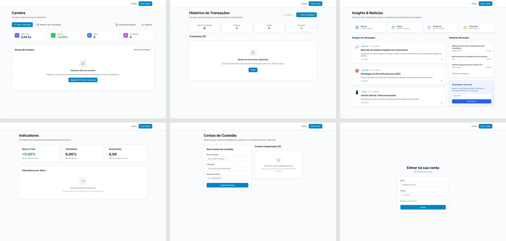
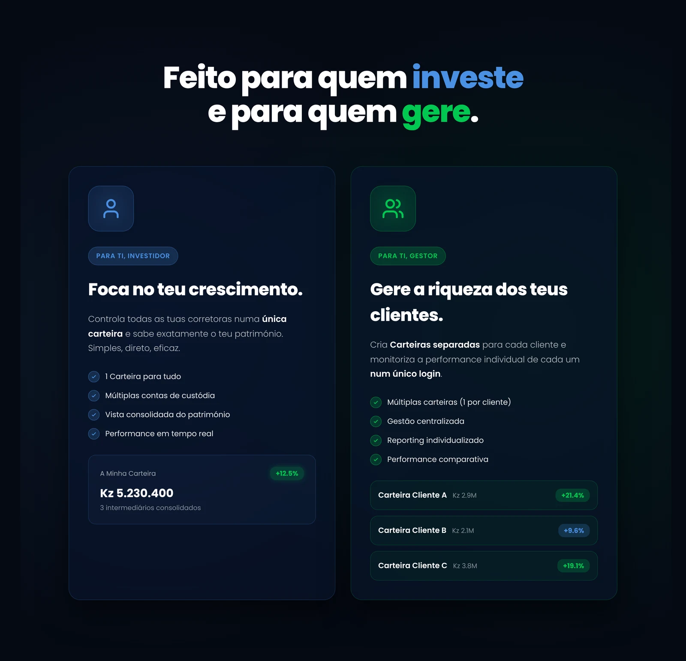
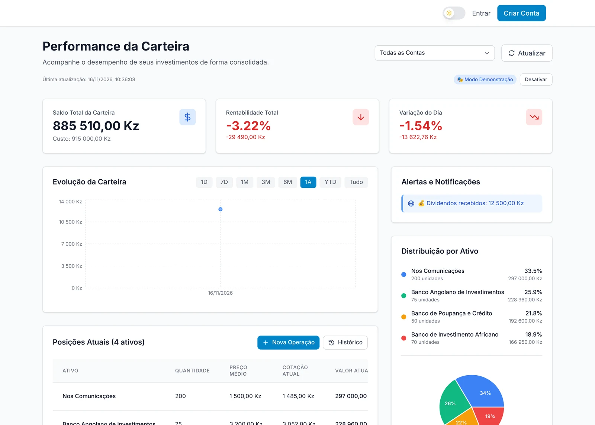
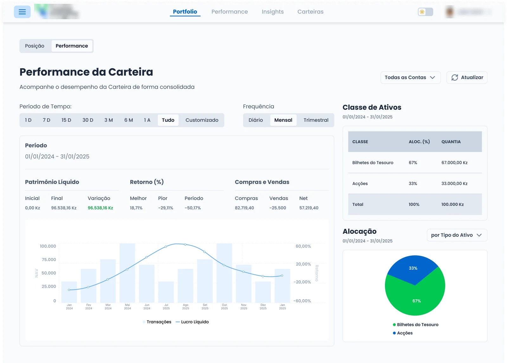

Context
The client wanted to become the go-to place for Angolan investors to see their real performance across brokers. Their users were beginner investors, experienced investors and investment advisors who manage money for their own clients. Until then, the client ran its advisory business on Excel spreadsheets.
The challenge: turn an ambitious vision, with a long wishlist, into a lean first version, in a domain full of financial terms and logic I had to learn fast.
Discovery
In the first weeks I had calls with the client almost every day, and their spreadsheets became my main source to understand the business, the users and the financial logic behind every number. We worked through a Lean Canvas, event storming and user story mapping.
To keep priorities honest, I built a canvas on top of the Fit for Purpose framework (David J. Anderson and Alexei Zheglov). It connects why a customer would use the product, how they judge whether it's working, and the metric that shows it. For example: an investor wants to consolidate positions from several brokers, judges it by how fast they can log a trade, and the metric is logging a trade in under 60 seconds.
Key decisions
1. Build it, not just design it
The client needed to see the product in days, not weeks. AI coding tools had just made it possible for a designer to build and deploy a coded prototype alone, and this was the first client project where I could do it. With Cursor, I vibe-coded a prototype of the whole product: 15 pages in 5 days, with its own GitHub repository and a live deployment the client could click through. It wasn't meant to be the final product. It showed the full vision at once, so the client could react to something real and the engineers had a clear starting point to build the actual platform, with its architecture, data and features.

2. Cut to the core
The client dreamed of much more: trading simulation, a learning area, news, community, gamification and, one day, becoming a brokerage. With the canvas as the reference, every feature had to serve a customer purpose and a metric. The MVP focused on what investors needed first: recording their positions and tracking the volume of their portfolio. The rest went to the roadmap.
3. One account model for investors and advisors
The product had to work both for people investing their own money and for advisors managing others'. I designed the experience so an account could stand alone or hold linked clients, and worked with the development manager on the data model behind it.

Results
- The product is live. After the prototype, I designed the real product page by page, with much more depth and polish, while we adopted front-end component libraries with the engineers. The skeleton from those 5 days is still there; the visual quality is on another level.
- The canvas became the client's reference for prioritization, connecting the value they wanted to deliver with measurable outcomes.


What I'd do differently
I'd test the prototype directly with investors and advisors before development, not only with the client team. And I'd turn the fitness metrics into launch metrics from day one, so we could measure the product with the same language we used to design it.